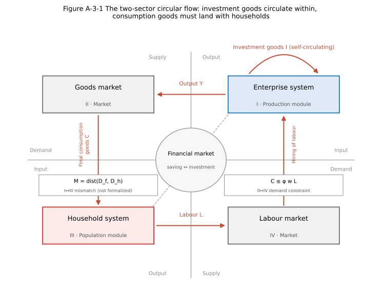
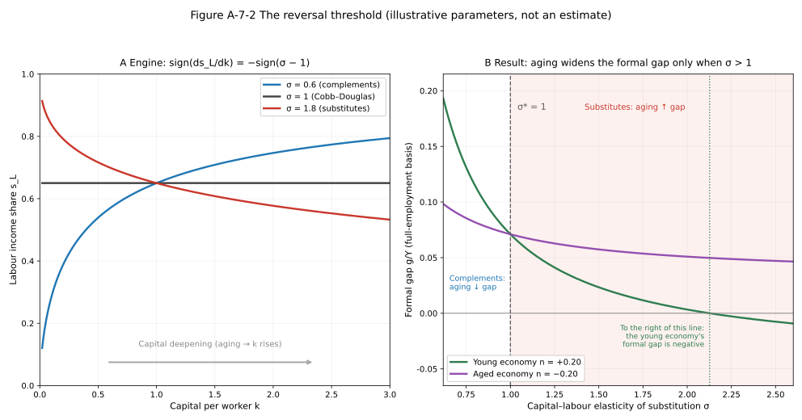
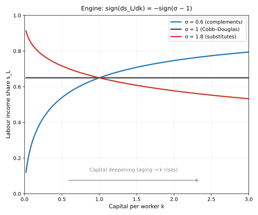
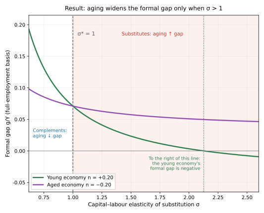
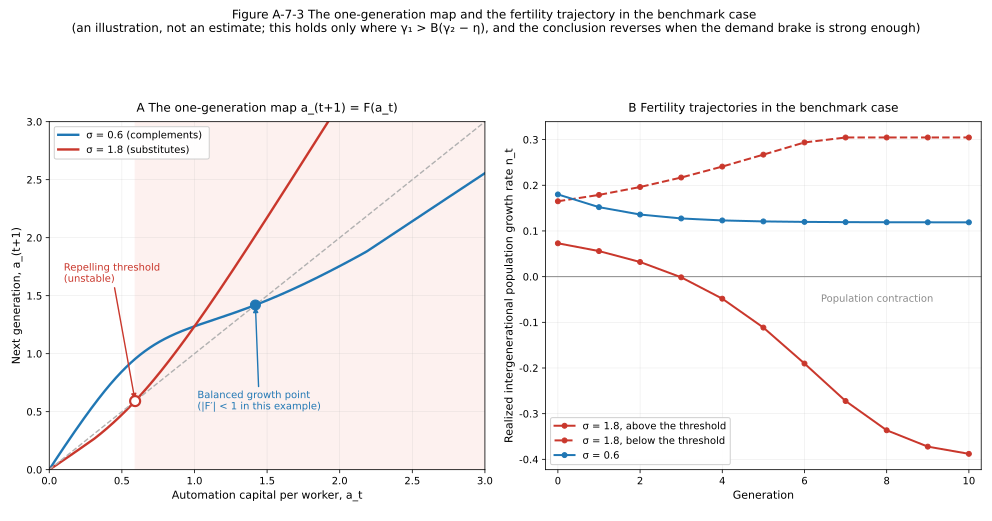
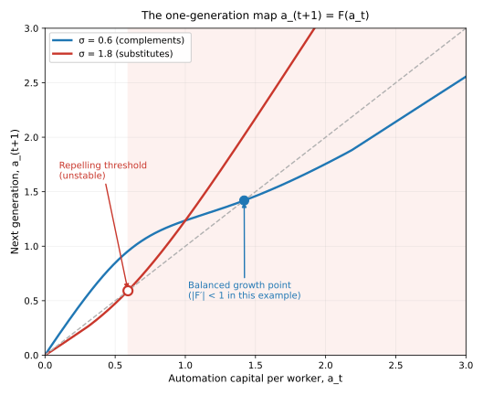
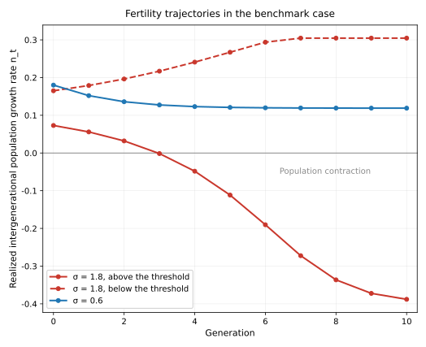

English Abstract
When automation substitutes for labour, does a falling population still make labour scarce?
Population aging is conventionally read as a labour-scarcity shock: in the textbook overlapping-generations economy, a lower birth rate slows the growth of the labour force, raises capital per worker, depresses the natural rate of interest, and raises the wage rate. This article asks a single question: when the capital being accumulated is more and more of the kind that substitutes for labour rather than the kind that works alongside it, may that conclusion cease to hold?
The answer turns on one step the standard chain leaves out. Capital deepening raises the wage rate, but whether it raises labour's share of output depends on the elasticity of substitution $\sigma$ between capital and labour. In a two-sector circular-flow economy in which investment goods circulate inside the enterprise sector while consumption goods must be bought out of household labour income, and under a deliberately demand-constrained closure, aging widens the economy's consumption–demand gap if and only if $\sigma > 1$—on an interval of $n$ along which an interior steady state exists throughout and the demand constraint binds throughout, conditions this article states explicitly and does not treat as formalities. The threshold sits exactly at the Cobb–Douglas knife-edge, and it coincides with the reversal of the labour-share response to capital deepening.
That result is conditional in three separate ways, and this article is organized around making the conditions explicit rather than around the result. First, $\sigma > 1$ is a structural assumption, not a finding: this framework does not identify $\sigma$ and does not estimate it, and for $\sigma < 1$ the whole mechanism runs in reverse. Second, even granting $\sigma > 1$, a falling labour share additionally requires the form of technical change, factor-market structure, sectoral composition, the ownership and consumption of capital income, and the definition of $\sigma$ itself to co-operate; two of these this article assumes away outright. Third, several channels the benchmark suppresses—a consumption pass-through rate that responds to the dependency ratio, an investment rate that responds to the capital share, the Baumol composition effect, migration, and the brake that weak demand itself places on investment in automation—push in the opposite direction. Their net weight is an empirical question this article does not settle.
The article also marks its own limits. The comparative statics apply only where the demand constraint binds, and the article locates the regime switch point; under the benchmark saving rule and sufficiently deep aging the model has no interior steady state at all, which is a failure of that rule rather than a finding about real economies. A separate section asks what happens when fertility responds to realized employment; it uses a different accumulation rule from the static model, the two have not been unified, and its local instability result reverses entirely when the demand brake is strong. Even that reversal is stated narrowly: it removes upward repulsion ($F' < 1$) but does not establish local stability, which would additionally require $F' > -1$, a bound the argument does not deliver. The article closes with the variables that would have to be measured for the question to be settled.
The analysis is positive throughout. Numerical values are illustrative under assumed parameters and are not estimates. This website's normative proposition—that Life-Reproduction Capacity takes primacy over Productive Forces—is argued elsewhere; nothing here supports it, and nothing here is offered as support for it.
Introduction: A Combination That Does Not Easily Belong to One Story
In August 2026 the Stanford Digital Economy Lab updated a working paper entitled Canaries in the Coal Mine? What it uses is neither a survey nor counts of postings on recruitment sites, but ADP's high-frequency administrative payroll data, covering millions of American employees, with the sample extending to June 2026. The first fact the paper reports is this: no economy-wide job displacement is observed. At the aggregate level nothing much can be made out.
What can be made out is structure. In occupations with high exposure to artificial intelligence, employment among employees aged 22 to 25 stands about 19% below the level it would have reached had it kept pace with similarly aged employees in less-exposed occupations; among senior employees in those same occupations, no comparable shortfall appears. The authors further note that this adjustment shows up mainly as reduced hiring rather than as increased layoffs.[1]
The authors' own characterization is restrained. They call these "early, descriptive indicators—canaries in the coal mine—rather than causal estimates", and write that "we do not believe that AI is always and everywhere the sole determinant of employment". They have checked interest rates as a competing explanation, and they also concede that "[e]ven if employment outcomes diverge notably only after the release of ChatGPT, this could be driven by other changes that occurred at the same time."[2]
Over the same period, another set of numbers has gone to an extreme in another direction. From the National Bureau of Statistics, Statistical Communiqué of the People's Republic of China on the 2025 National Economic and Social Development: 7.92 million births over the year, a birth rate of 5.63 per thousand; 11.31 million deaths; a rate of natural increase of −2.41 per thousand; a year-end national population of 1,404.89 million, 3.39 million lower than at the end of the previous year.[3] For a sense of scale, the same agency published 17.86 million births for 2016, a birth rate of 12.95 per thousand, and a rate of natural increase of 5.86 per thousand.[4] And at the other end of labour supply, the Ministry of Education projects that the 2026 cohort of graduates from ordinary institutions of higher education nationwide will number 12.70 million, 480,000 more than the previous cohort.[5]
Put together, they make a combination that does not easily belong to one story: new entrants to the labour force with higher education are increasing, demand at the entry end is contracting, and the population stock is already falling.
This is where this article's question enters; it is not this article's evidence. That has to be nailed down at the outset, because it determines the character of every claim that follows:
- Each of the three sets of facts above has explanations independent of this article's mechanism—the lagged expansion of educational supply, industry hiring cycles, mean reversion in post-pandemic recruitment, housing and childrearing costs, later ages at marriage and childbirth. Nothing within this article's framework can discriminate among these explanations.
- More importantly, this article's model simply cannot speak to the form in which the adjustment occurs. The model that follows contains only a homogeneous quantity of labour and a utilization rate: no hiring flows, no quit or layoff flows, no vacancies, no matching process, no age or seniority, no entry-level positions. At most it can yield "realized employment falls short of full employment"; it cannot yield whether that shortfall is realized through hiring less or through dismissing more. That the adjustment occurs at the hiring end, as observed in the Stanford paper, is a fact in the data, not an implication of this article's model, and this article does not use it as one.
What, then, does this article ask?
Standard population economics has a well-developed reading: the birth rate falls → growth of the labour force slows → labour becomes relatively scarce → capital per worker rises → diminishing returns to capital depress the natural rate of interest and raise wages. In this reading, aging is a labour-scarcity shock.[6]
This article asks one question only:
When the capital being accumulated is more and more of the kind that substitutes for labour rather than the kind that works alongside it, may the conclusion that "a falling population makes labour scarcer" cease to hold?
Around this one question, this article sets out four things in turn: the mechanism (Section 2), the conditions (Section 3), the counter-mechanisms (Section 4), and the variables that remain to be measured (Section 7). Section 5 sets out the model's own boundaries; Section 6 explains what this article can and cannot supply to the already-published A-3.
1. The Standard Reading, and the Step It Leaves Out
1.1 The textbook chain
Consider the simplest overlapping-generations economy. Population evolves at a growth rate $n$ per generation, and capital accumulates according to a saving rate. A falling birth rate shows up as a fall in $n$. Under constant returns to scale and diminishing marginal products of the factors:
- growth of the labour force slows, and steady-state capital per worker $k^{*}$ rises;
- the marginal product of capital falls, and the natural rate of interest falls with it;
- the marginal product of labour rises, and the real wage rate rises with it.
This chain is clean, and it is robust: it uses only constant returns to scale and diminishing marginal products, and does not depend on any particular functional form. This article denies none of its steps—in the model that follows, all three hold just as well.
1.2 The step that gets left out
The trouble lies in the step from "the wage rate rises" to "the labour income share rises". This step is often taken for granted; in fact it does not hold.
The labour income share is
$$s_L=\frac{wL}{Y}=\frac{w(k)}{y(k)}.$$
Capital deepening raises the numerator (the wage rate) and the denominator (output per worker) at the same time. Which of the two rises faster depends on whether the two factors can substitute for each other, and on how easily.
This is what the capital–labour elasticity of substitution $\sigma$ means: when the price of capital relative to labour falls by 1%, by what percentage will firms raise their capital–labour input ratio?
- $\sigma < 1$ (gross complements): as capital becomes more plentiful, labour becomes relatively more critical, because there is "not enough labour to go with that much capital", and the labour share rises;
- $\sigma > 1$ (gross substitutes): as capital becomes more plentiful, firms find it easier to put capital in labour's place, and the labour share falls;
- $\sigma = 1$ (the Cobb–Douglas knife-edge case): the shares are independent of $k$ and constant.
A very coarse example will put the intuition on the table. Imagine the customer-service function of a firm. The complementary case: the firm buys a ticketing system that doubles the throughput of each agent, but the tickets still have to be judged and answered by a person in the end; the more machines there are, the more valuable are the people who can do the work, because the output of the machines is capped by how many people there are to use them. The substituting case: the firm buys a system that can complete most conversations on its own, and people take over only when the system fails; the more machines there are, the fewer the people needed to take over, and each further fall in the price of the system displaces another batch of jobs.
A reminder is needed here: this distinction is about one and the same technical margin, not about whether AI is useful or useless. A tool of extraordinary usefulness can perfectly well be complementary, and a system of unremarkable capability can perfectly well be substituting. What settles the sign is not the level of capability, but which part of the person it takes the place of.
$\sigma = 1$ is exactly the knife-edge at which the two effects cancel: the proportion by which the machine raises each person's output is exactly equal to the proportion of people the machine displaces. It is also exactly the Cobb–Douglas production function that almost every textbook uses by default. In that setting the labour share is a constant, and there is no point in discussing how it varies with capital deepening—this is part of the reason the standard framework cannot see the question this article asks. (This only explains why it does not appear in the benchmark; it constitutes no empirical argument against $\sigma = 1$.)
This step is not new in the literature. Karabarbounis and Neiman document the widespread decline in the global labour share since 1975 and argue that a falling relative price of investment goods shifts income from labour to capital when capital and labour are sufficiently substitutable; Acemoglu and Restrepo give a task-based version of the same displacement mechanism, treating "automation displacing labour" and "new tasks reinstating labour" as two opposing forces.[7] There is a further related but differently directed literature, which asks whether aging in turn induces automation, and whether automation can offset the output consequences of a shrinking labour force.[8] This article does not re-argue any of this; it takes the share response as a given technical mechanism and asks what follows when that mechanism is placed alongside the constraint that consumption demand has to be realized out of labour income.
1.3 Which benchmark this article is contrasting itself with
The object of criticism has to be delimited clearly, or this article will appear to claim more than it does.
What this article contrasts itself with is the minimal benchmark of representative labour, full employment, and completely clearing markets—the textbook Ramsey model and its overlapping-generations version, in which prices, interest rates and fiscal adjustment ultimately clear the goods market, so that no persistent demand shortfall exists at the aggregate level.
This article is not criticizing "standard population economics", and does not claim that the standard framework cannot accommodate the set of facts in the introduction. Quite the opposite: a standard model incorporating population-cohort lags, skill mismatch, wage rigidity, sectoral demand shocks, search-and-matching frictions or educational expansion could each accommodate both "the supply of new entrants to the labour force is increasing" and "demand at the entry end is contracting". Heterogeneous-household models, incomplete-markets models, financial-friction models, coordination-failure and multiple-equilibrium models, and analyses of demand shortfalls within the New Keynesian framework have all treated, to varying degrees, the question this article is concerned with, and the conclusions of several of those strands are compatible with this article's.
What this article proposes is only another channel: factor distribution may itself shift with capital deepening, thereby changing the macroeconomic meaning of aging. It is not mutually exclusive with any of the channels above.
1.4 Two declarations
First, this article is positive analysis, and provides support for no normative proposition.
This website's core proposition, that Life-Reproduction Capacity takes primacy over Productive Forces, is a normative claim; it is argued in the basic-theory articles, and it is not supported by any conclusion of this article, nor does this article attempt to support it. A positive model can tell you what will happen under given conditions; it cannot tell you what is more worth wanting. This article does not take that step, and it does not adopt formulations of the kind "such-and-such a choice is necessary". When Section 6 discusses transfer payments it likewise only reports mechanisms of the model, and makes no recommendation whatever.
Second, $\sigma > 1$ is an assumption, not a finding.
This article's core structural assumption is $\sigma > 1$. It is not derived here, and this article does not estimate it—Section 3.5 will explain why, within this article's framework, it is simply not identified. Most existing empirical estimates of the aggregate capital–labour elasticity of substitution fall below 1. When $\sigma < 1$, this article's mechanism runs in reverse throughout: aging narrows rather than widens the demand gap. This point will recur repeatedly in the main text, because it is the place where this article is most easily misread.
2. The Mechanism: A Minimal Model
2.1 A two-sector circular flow
Before writing down the equations, the organizational structure of the economy has to be set out (Figure A-7-1).

The economy is a circular flow around the financial market, divided into four quadrants: the enterprise system (quadrant I, the production module), the household system (quadrant III, the population module), and the goods market (quadrant II) and labour market (quadrant IV) that connect them. The real flows (output $Y$, final consumption goods $C$, labour $L$) and the corresponding monetary flows run in opposite directions around the circuit.
This diagram carries one annotation, and it is the source of everything in this article: investment goods circulate within the enterprise sector; consumption goods must land in the hands of households.
Machines are sold to firms, data centres are sold to firms, computing power is sold to firms—this circuit needs no household as buyer. Consumption goods, by contrast, have to be bought away by households' purchasing power, and that purchasing power flows out first of all by way of wages. The market for consumption goods is therefore constrained by this income:
$$C\le \varphi, w, L .$$
This distinction is easily misread as "investment is not really demand". That is not what is meant. Investment is of course demand in the accounts, and in the short run it is even the most powerful kind. The real difference lies in the mode of validation: a machine sold to a firm completes its transaction in the current period, but that machine is bought in order to produce more consumption goods in the future—it stakes its own justification on there being, at some future date, people who can afford those products; whereas a consumption good sold to a household is a transaction that is itself the terminus. Self-circulation postpones settlement; it does not abolish it.
(Figure A-7-1 also draws a "mismatch" diagonal between I and III, meaning the distance between the structure of labour that firms need and the structure that households can supply. This article does not formalize it: labour in this article is homogeneous, without age or skill dimensions, so that this distance cannot even be defined within the model. The "young versus senior" dividing line in the introduction falls squarely on this unformalized diagonal, and this is the most conspicuous distance between this article and that set of facts.)
2.2 The demand-constrained closure is a modelling choice
This is said up front, otherwise the character of the whole article will be misunderstood.
In a fuller model, prices, interest rates and possibly fiscal policy would alter consumption and investment demand. This article deliberately suppresses these adjustments, in order to examine the "composition of demand" channel in isolation. This is a modelling choice, not an assertion about market failure in the real world.
The price is explicit: the gap this article obtains is conditional on this closure and on the CES specification. Change the closure and the position of the threshold moves—Section 4 lists several specific directions of movement. This article does not claim that markets cannot clear; what it claims is something weaker and also more testable: in the limiting case where price and fiscal adjustment are suppressed, the position of the elasticity of substitution determines the sign of the gap's response to aging.
2.3 The engine: one sign
Time is discrete in generations. A single final good is produced from capital $K$ (which includes automation capital) and labour $L$ by a constant-elasticity-of-substitution technology. Writing capital per worker as $k=K/L$,
$$y(k)=\bigl[\alpha k^{\rho}+(1-\alpha)\bigr]^{1/\rho},\qquad \rho=\frac{\sigma-1}{\sigma},\tag{1}$$
where $\sigma > 0$, $\alpha\in(0,1)$, and $\sigma = 1$ corresponds to the Cobb–Douglas limit $y=k^{\alpha}$. Factor prices equal marginal products, and the labour income share is
$$s_L(k)=\frac{w(k)}{y(k)}=\frac{1-\alpha}{\alpha k^{\rho}+(1-\alpha)},\qquad s_K(k)=1-s_L(k).\tag{2}$$
Lemma 1 (the labour-share response). For the CES technology of (1), $$\frac{\mathrm{d}s_L}{\mathrm{d}k}=-\frac{(1-\alpha),\alpha,\rho,k^{\rho-1}}{\bigl[\alpha k^{\rho}+1-\alpha\bigr]^{2}},\qquad\text{and hence}\qquad \operatorname{sign}\Bigl(\frac{\mathrm{d}s_L}{\mathrm{d}k}\Bigr)=-\operatorname{sign}(\sigma-1).\tag{3}$$
The proof is in Appendix A.1. This is the only engine in Section 2. Every conclusion that follows uses this sign, but not one of them is determined by it alone—the dynamic conclusion of 5.3 additionally depends on a bracket condition, for which see qualification 1 in 5.3.
A terminological boundary (the interface with the companion article, A-6). The object of this article is the labour income share $s_L$. The object of A-6, How Far Are Humanoid Robots from Entering Ordinary Households?, is the household income share $\lambda$, which includes transfer payments. The two are not the same quantity: the labour share is only one component of the household income share. The $\sigma$ of this article is a technical elasticity, whereas the elasticity of household consumption absorption used in A-6 is a policy-response elasticity; these too are of different kinds. The two articles stand independently, and this article does not take any conclusion of A-6 as a premise.
2.4 The consumption–demand gap and the reversal threshold
Consumption demand is constrained by labour income:
$$C^{d}=\varphi,w,L,\qquad \varphi\in(0,1],\tag{4}$$
where $\varphi$ is the rate of pass-through from labour income to consumption demand, and folds in that part of the consumption of dependants and retirees which is financed out of labour income. (Public transfer payments are not included within $\varphi$; they are handled as a separate term in Section 6. In the benchmark specification capital income is reinvested rather than consumed; 2.5 relaxes this.)
Assumption 1 (the benchmark closure). Saving behaviour is fixed: a constant share $s\in(0,1)$ of output goes to capital formation, so that in a state of stable population the capital–output ratio satisfies $k/y(k)=s/(n+\delta)$, where $\delta$ is the depreciation rate.
Under full employment, investment demand per worker is $(n+\delta)k=s,y$, and what remains is the supply of consumption goods. The consumption–demand gap is therefore
$$\frac{g}{Y}=\frac{y-\varphi w-(n+\delta)k}{y}=(1-s)-\varphi, s_L(k).\tag{5}$$
A positive gap means that, at the full-employment level of output, the supply of consumption goods exceeds the demand that can be realized out of labour income, so that the consumption-goods sector is demand-constrained. (Both $g$ and $Y$ refer to aggregates; dividing numerator and denominator by the labour force, (5) written in per-worker terms and written in aggregate terms is the same number.)
Two measures must be distinguished: what (5) defines is the formal gap on a full-employment basis, and it is smooth everywhere; the economically meaningful demand shortfall is $\max{0,,g/Y}$. When $g/Y\le 0$ there is no shortfall of consumption demand, and output is constrained by the full-employment ceiling. Antecedent (iii) of Proposition 1 below is set precisely for the region of demand shortfall.
Aging is modelled as a fall in $n$; under Assumption 1 it raises the steady-state capital–labour ratio. Putting this together with (5) and Lemma 1:
Proposition 1 (the reversal threshold). Antecedents: (i) the benchmark two-sector CES economy satisfies Assumption 1 and the labour-income-constrained consumption demand (4); (ii) the interval of population growth rates under consideration, $\mathcal{N}\subset(-\delta,\infty)$, lies in its entirety within the range over which a steady state exists (see 5.2), so that $k^{}(n)$ exists, is unique and is differentiable everywhere on $\mathcal{N}$; (iii) $k^{}(n)$ makes the gap strictly positive everywhere on $\mathcal{N}$, that is, the demand constraint binds everywhere (see 5.1). Conclusion: on $\mathcal{N}$, aging—a fall in $n$—widens the consumption–demand gap if and only if $\sigma > 1$. The gap is exactly unaffected by aging at $\sigma = 1$, and narrows when $\sigma < 1$. The reversal threshold in the benchmark model is therefore exactly $\sigma^{*}=1$.
The proof is in Appendix A.2.
None of the three antecedents can be dispensed with, and for different reasons: (i) is a structural assumption; (ii) is an existence condition, without which the object of the comparative statics, $k^{*}(n)$, does not exist; (iii) is a reachability condition, without which the demand constraint does not bind and the sign of the gap is no longer transmitted to realized output. That (ii) and (iii) are written as holding on "the whole interval" rather than "at a point" is because aging here is a discrete demographic change: subtracting an infeasible endpoint from a feasible one yields a difference the proposition does not license. Write $\sigma > 1$ without writing (ii) and (iii), and the proposition does not hold.
A contrast that has to be made equally clear. The marginal-product wage $w(k)$ under full employment rises with $k$ for every $\sigma$—the textbook chain of 1.1 holds in this article's model as well. Moreover, under this article's illustrative parameters, realized labour income per worker $u,w$ is rising too. What, then, is being compressed?
What is being compressed is a proportion, not a level. Writing $u\le 1$ for the demand-constrained utilization rate (defined by (6) in 5.3), realized labour income as a proportion of full-employment output is $u,s_L$. When $\sigma > 1$, aging compresses $s_L$, widens the gap and depresses $u$, so that this proportion falls: under the illustrative parameters, at $\sigma = 1.8$ it falls from 0.729 to 0.612. The wage rate rises, labour income per worker rises, and labour income falls as a proportion of output—all three hold simultaneously under one and the same set of parameters.
This is exactly the crux of the step in 1.2: "wages went up" and "labour's share got bigger" are not the same thing. What this article is concerned with is the latter, because under the given closure the size of consumption demand relative to output depends on the labour share.
To say it once more: $u$ is only the single aggregate "realized employment relative to full employment". It does not distinguish who bears that shortfall, and it says nothing about the channel through which the shortfall comes about.
2.5 Is the threshold robust? The case where capital income is consumed
The exact position $\sigma^{*}=1$ might look like an artefact of the benchmark assumption that capital income is entirely reinvested. The answer is: the most direct relaxation does not move it.
Let a constant proportion $\chi\in[0,1)$ of capital income be consumed. A closure convention has to be stated here: investment demand in this article is autonomous, fixed at $s,y$, and does not vary with $\chi$; $\chi$ enters only on the consumption-demand side. (If instead investment were allowed to fall correspondingly by $\chi s_K y$, the two terms would exactly cancel and $\chi$ would have no effect whatever on the gap—everything in this subsection depends on the former convention.) Under this convention, the gap (5) generalizes to $(1-s-\chi)-(\varphi-\chi),s_L(k)$. This is still an affine function of the labour share: the intercept moves and the slope is rescaled, while the only dependence on $k$ still runs solely through $s_L(k)$. Hence when $\chi < \varphi$ the reversal threshold is unchanged, $\sigma^{*}=1$, and consuming capital income merely rescales the magnitude of the aging effect by $(\varphi-\chi)/\varphi$; when $\chi = \varphi$ the gap is independent of $k$, factor distribution has no effect on the gap at all, and this article's mechanism goes to zero; when $\chi > \varphi$ the sign flips throughout. The proof is in Appendix A.3.
What does move the threshold? Not "consuming capital income" as such, but consuming it in a way that makes the gap depend on the capital stock otherwise than through the affine channel. The several counter-mechanisms listed in Section 4 are all of this kind.
2.6 The diagram and the illustrative numbers
Figure A-7-2, left panel, plots the variation of the labour share with capital per worker for different $\sigma$ (Lemma 1); the right panel plots the formal gap (the full-employment basis of 2.4) against $\sigma$, for a young economy and an aged economy respectively, the two curves intersecting exactly at $\sigma = 1$.



The right panel also marks a vertical line ($\sigma\approx 2.13$): to its right, the young economy's formal gap turns negative, that is, there is no shortfall of consumption demand there. The curve is still drawn, to show the trend, but that segment falls outside antecedent (iii) of Proposition 1—this is the position, on the diagram, of the regime switch discussed in 5.1.
The illustrative parameters are $\alpha=0.35$, $s=0.50$, $\delta=0.80$ (per generation), $\varphi=0.66$, with $n=+0.20$ for the young economy and $n=-0.20$ for the aged economy. This set of parameters was chosen to satisfy the antecedents of Proposition 1: over the whole interval $n\in[-0.20,,0.20]$, the labour share for all three values of $\sigma$ is strictly below the bound $(1-s)/\varphi=0.758$ given by (5), so that the demand constraint binds everywhere.
| $\sigma$ | Young economy $s_L$ / gap / $u$ | Aged economy $s_L$ / gap / $u$ | Effect of aging on the gap |
|---|---|---|---|
| 0.6 | 0.444 / +0.207 / 0.708 | 0.605 / +0.101 / 0.832 | −0.106 (narrows) |
| 1.0 | 0.650 / +0.071 / 0.876 | 0.650 / +0.071 / 0.876 | 0 (unchanged) |
| 1.8 | 0.743 / +0.010 / 0.981 | 0.677 / +0.053 / 0.904 | +0.043 (widens) |
Table A-7-1: an illustration under assumed parameters, not an estimate. The $u$ in the table is given by (6) in 5.3, and is identically equal to (5) ($u=s/(s+g/Y)$), so that it is consistent with the basis used in this section. The sole function of these numbers is to draw the sign conclusion out; they come from no estimation procedure whatever, and should not be taken as a depiction of any economy. Note that the young economy at $\sigma = 1.8$ is only about two percentage points away from the boundary ($u=0.981$)—the illustrative parameters do not leave much room, and this is itself one aspect of the "regime switch" discussed in 5.1.
3. The Conditions: $\sigma > 1$ Is Not Enough
The formal content of Proposition 1 is clean. But before it can bear on the real-world judgement that "the AI revolution will depress the labour income share and thereby manufacture deficient effective demand", a string of conditions still stands in between. This section lists them one by one, and states how this article deals with each.
The function of this section is to set bounds. Once the list is complete, what this article can claim will be less than it was before the list.
3.1 The form of the technology
The sign conclusion of Lemma 1 holds within one particular specification: CES with constant factor-augmenting coefficients. Once technical progress itself has a direction, matters change. If technical progress is labour-augmenting (Harrod-neutral), then factor shares are constant along a balanced growth path—whatever value $\sigma$ takes; only capital-augmenting technical progress will persistently depress the labour share when $\sigma > 1$. And Uzawa's steady-state growth theorem shows that, for a balanced growth path with a constant capital–output ratio and a positive rate of technical progress to exist, technical progress must be labour-augmenting.[9]
How this article deals with it: this article's specification contains no exogenous technical progress—change comes from population and from capital accumulation itself. This is both why this article can let $s_L$ move with $k$, and the source of the existence boundary in 5.2. Put exogenous technical progress back in, and the connection between $\sigma > 1$ and "the labour share falls" needs to be argued afresh.
3.2 Factor-market structure
The $s_L$ of (2) uses factor prices equal to marginal products, that is, perfect competition. In reality the labour income share is also affected by two kinds of departure:
- Product-market markups. If firms price at a markup $\mu_p > 1$ over marginal cost, the observed labour share is the technical share divided by $\mu_p$; a rising markup depresses it, independently of $\sigma$.[10]
- Labour-market bargaining and monopsony power. If wages are below the marginal product, the labour share likewise falls, and again independently of $\sigma$.
How this article deals with them: these two channels are assumed away. The price is that this article cannot, and does not attempt to, infer $\sigma > 1$ from an observed fall in the labour share. A falling labour share is compatible with $\sigma > 1$, but compatibility is not identification.
One further term must be corrected first, because Section 5 will use it. $s_K=1-s_L$ is the capital income share, not the profit share. Under perfect competition and constant returns to scale, capital's factor income includes the normal return to capital and the depreciation allowance, and is not equal to economic profit or excess profit. To interpret it as the motive force of investment would, strictly speaking, require distinguishing capital income, depreciation, rents, markup profits and firms' internal funds—this article does not make that distinction. The specification in 5.3 by which "a rising capital share pulls automation investment along" is therefore a behavioural assumption, not a conclusion derived from the rate of profit.
3.3 Sectoral composition
Equation (1) is the production function of a single final good. Besides technical substitution, the aggregate labour share is also affected by the composition of output: if labour-intensive sectors with slow productivity growth (care, education, parts of services) see their output shares rise as income rises—which is the standard conclusion of Baumol's cost disease—then this channel raises the aggregate labour share, in the opposite direction to the substitution effect.
How this article deals with it: the "two sectors" of this article are a division by use (investment goods and consumption goods), not by technology; on the production side there is a single sector. This channel is assumed away, and its net direction is not clear.
3.4 Capital ownership and the propensity to consume out of capital income
Even if the labour share does fall, the step to "deficient effective demand" requires a further condition: that capital income is not converted into consumption demand, or is converted less. This has already been formalized in 2.5, as the position of $\chi$ relative to $\varphi$: when $\chi < \varphi$ the mechanism proceeds as before, when $\chi = \varphi$ it goes to zero, and when $\chi > \varphi$ the sign flips.
And the size of $\chi$ bears directly on the distribution of capital ownership: if the returns to capital are widely dispersed among ordinary households (through pensions, broad shareholding and so on), $\chi$ approaches $\varphi$; if they are highly concentrated, $\chi$ falls far below $\varphi$.
How this article deals with it: this is the only one of the five that is explicitly relaxed and subjected to a sensitivity analysis; $\chi$ remains an exogenous parameter. This article does not model the distribution of ownership itself, and does not explain where $\chi$ comes from.
3.5 What $\sigma$ measures
The last condition concerns the definition of $\sigma$ itself.
Most existing estimates of the aggregate capital–labour elasticity of substitution fall below 1. Two points need to be made, but they are arguments, not evidence: first, what this article is concerned with is not the aggregate elasticity but the elasticity on the specific margin along which automation capital substitutes for the tasks labour performs, and task-based analysis indicates that this can be significantly higher than the aggregate value; second, the aggregate elasticity is itself a composite quantity, and it can drift as the composition of the capital stock tilts towards automation.[7]
How this article deals with it: it only delimits what is being measured; it makes no estimate. And it has to be said plainly that $\sigma$ is not identified within this article's framework, for reasons that are structural rather than a matter of insufficient data: this article has no task-based microfoundation, and cannot put $\sigma$ into correspondence with an observable automation margin; this article assumes perfect competition, so that an observed movement in shares is explained by $\sigma$ and by the markup rate at the same time (3.2); this article has no sectoral structure, so that the compositional component cannot be stripped out (3.3); and $\varphi$, $\chi$ and $s$ are all exogenous constants, for which this article has no moment conditions that would tell them apart. A structural parameter that is not identified is simply not identified, and this article does not put a correlation coefficient in its place.
3.6 The list
| Condition | Content | How this article deals with it |
|---|---|---|
| C1 Form of the technology | Constant factor-augmenting coefficients; if technology is labour-augmenting, shares are constant along the balanced path | Assumes no exogenous technical progress; the consequence is the existence boundary of 5.2 |
| C2 Factor-market structure | Perfect competition; changes in markups or bargaining would depress the labour share independently | Assumed away |
| C3 Sectoral composition | A single production sector; the Baumol composition effect runs in the opposite direction | Assumed away |
| C4 Capital ownership and $\chi$ | The propensity to consume out of capital income must be lower than out of labour income | Sensitivity analysis on an exogenous parameter (2.5) |
| C5 What $\sigma$ measures | What is relevant is the elasticity on the automation margin, not the aggregate elasticity | Delimits what is measured; not identified |
Table A-7-2: the five conditions beyond $\sigma > 1$.
Once this table has been read, the correct reading of Proposition 1 is:
Under a demand-constrained closure, perfect competition, a single production sector, no exogenous technical progress, a propensity to consume out of capital income lower than out of labour income, and a steady state that exists and makes the demand constraint bind, aging widens the consumption–demand gap if and only if the elasticity of substitution between automation capital and labour is greater than 1.
This is a great deal weaker, and a great deal longer, than "if $\sigma > 1$ then the labour share falls and demand is deficient". But it is the sentence this article has actually proved.
4. Counter-Mechanisms: The Forces That Push the Threshold Back
Section 3 listed what is further needed for the mechanism to hold. This section lists the opposite: the forces the benchmark closure suppresses, whose direction is contrary to this article's mechanism. Every one of them would push the reversal threshold away from 1, or else weaken the gap directly.
1. The consumption pass-through rate rises with the dependency ratio. In reality a rising dependency ratio pushes $\varphi$ up—a larger proportion of income goes to current consumption rather than to saving. Setting $\varphi=\varphi(n)$, the gap's response to aging is determined by the sum of two terms (of opposite signs, so that they offset each other): $\mathrm{d}\log s_L/\mathrm{d}n$ (positive when $\sigma > 1$, which is the mechanism of Proposition 1) and $\mathrm{d}\log\varphi/\mathrm{d}n$ (negative, since "aging pushes $\varphi$ up"). At $\sigma = 1$ the first term is zero, so aging narrows the gap; hence if a reversal threshold still exists, it must lie at $\sigma^{*} > 1$. If the response of $\varphi$ is strong enough, the threshold may not exist at all—aging would narrow the gap over the entire range of $\sigma$. This article does not model $\varphi(n)$, and therefore reports no magnitude.
2. The response of the investment rate to the capital share. Assumption 1 treats $s$ as a constant. If $s$ is allowed to rise with the capital share—which is natural in terms of firms' investment behaviour—then when $\sigma > 1$ aging depresses $s_L$, raises $s_K$ and raises $s$, so that the first term of the gap $(1-s)-\varphi s_L$ falls. This channel likewise narrows the gap. It should be pointed out that the dynamic specification of Section 5 depends on precisely this response (the $\gamma_1 s_K$ term there), whereas Section 2 assumes it away—the two sections take opposite specifications on the same matter; see 5.3.
3. The composition effect of sectors with low substitutability. Aging itself raises the demand share of care services, and care is exactly the class of labour with the lowest substitutability. There is therefore an automatic stabilizer: while aging depresses the aggregate labour share, it is also pushing the composition of output towards the labour-intensive side (3.3). But this offsetting channel has its own limits—the ability to pay for care demand comes mainly from labour income and public transfers, which is to say from the very end that is being compressed; a sector can resist automation technologically and at the same time be held back financially by deficient effective demand. Which side is stronger is a question this article's single-sector framework cannot answer.
4. Migration. When migration adjusts the labour force it is not subject to the one-generation lag that childbearing is subject to. It can directly loosen the "capital adjusts fast, population adjusts slowly" time structure, and thereby weaken the dynamic mechanism of Section 5. This article does not model migration.
5. The brake that weak demand itself places on investment in automation. A widening gap means a falling rate of capacity utilization, and a falling utilization rate is itself a reason to stop expanding capacity. This negative feedback is written into the accumulation rule in Section 5 (the $-\gamma_2(1-u)$ term there), and 5.3 will show that when it is strong enough, the conclusion of Section 5 reverses throughout. In the static specification of Section 2 it does not exist at all.
The net direction of these five is not given by any a priori argument. Within the benchmark model, the antecedents of Proposition 1 holding is enough to yield its conclusion; but one cannot infer from this that a reversal has already occurred in real economies, because the channels above are suppressed or omitted by the benchmark closure. To form a judgement about reality requires the measurements listed in Section 7.
5. The Model's Own Boundaries
5.1 When the demand constraint binds: a regime switch
Antecedent (iii) of Proposition 1 requires the gap to be strictly positive over the whole interval of $n$. This requirement is not formalism: the case it rules out is itself worth looking at separately.
The gap is positive if and only if $s_L(k) < (1-s)/\varphi$. When $\sigma > 1$, $s_L$ decreases in $k$ and $k^{}$ decreases in $n$, so $s_L(k^{}(n))$ increases in $n$: the faster the population grows, the higher the labour share and the looser the demand constraint. There is therefore a regime switch point $n_{\mathrm{sw}}(\sigma)$: for $n > n_{\mathrm{sw}}$ the demand constraint does not bind, and for $n < n_{\mathrm{sw}}$ it binds.
Under the illustrative parameters of 2.6:
| $\sigma$ | 1.2 | 1.5 | 1.8 | 2.5 |
|---|---|---|---|---|
| $n_{\mathrm{sw}}$ | +3.73 | +0.70 | +0.34 | +0.12 |
Table A-7-3: the regime switch point, per generation. An illustration, not an estimate. For smaller $\sigma$ the switch point is so high as to have no demographic meaning ($\sigma = 1.2$ corresponds to labour-force growth of 373% per generation), which is to say that at any realistic population growth rate the demand constraint already binds.
$n_{\mathrm{sw}}$ is decreasing in $\sigma$: the stronger the substitutability, the lower the population growth rate that suffices to push the economy into the demand-constrained state.
Two points must be made clear. First, the formal gap $g/Y$ is still smooth; what is non-differentiable is the realized demand shortfall $\max{0,g/Y}$. If the interval of $n$ under consideration straddles $n_{\mathrm{sw}}$, Proposition 1's interpretation as a derivative in the interior of the constrained region cannot cover the whole interval. Second, what may be more worth studying in reality is how an economy crosses this boundary; this article does not characterize the dynamics of the switch, nor does it discuss whether it is reversible.
5.2 The failure of the benchmark saving rule
When $\sigma > 1$, the CES capital–output ratio $k/y(k)$ has a finite upper bound $\bar\kappa=\alpha^{\sigma/(1-\sigma)}$ (about 10.6 at $\sigma = 1.8$ under the illustrative parameters, tending to $1/\alpha$ as $\sigma\to\infty$). But Assumption 1 requires $k/y=s/(n+\delta)$, and aging raises the right-hand side. Hence when $n$ falls below a certain critical value this equation has no solution: under the benchmark saving rule no interior steady state exists.
This boundary has to be read for what it is.
It is a model's existence boundary, not a finding about aging in the real world. It depends heavily on this article's whole set of simplifications: a fixed saving rate, non-labour-augmenting CES, a fixed depreciation rate, a single capital good, a closed economy, and no price or investment adjustment. Relax any one of them and this boundary moves, or disappears. To read "this accumulation equation has no fixed point at this set of parameters" as "a real economy will lose its steady state" is wrong; this article draws no such inference, and still less does it set the result against any country's demographic data quantitatively—between the total fertility rate and the labour-force growth rate $n$ of the model lie the proportion of female births, survival rates, the age structure of childbearing, migration, labour-force participation rates and the distribution of ages at entry into work, and this article has not performed those conversions, nor does it consider that they can simply be skipped.
Its only function in this article is this: to remind the reader that antecedent (ii) of Proposition 1 is not a courtesy. Push aging deep enough, and what needs restating is not the direction of the gap but whether this model still holds at all.
5.3 If fertility responds to employment
Up to this point the population growth rate $n$ has been exogenous. What if it responds in turn to employment?
The standing of this section must be made clear first.
- It uses a different accumulation rule: Section 2 uses the saving rule of Assumption 1 to determine the steady-state capital–output ratio, whereas this section uses a reduced-form growth rule to determine the evolution of capital. The two have not been unified. The conclusions of this section and the conclusions of Section 2 are therefore not two parts of one model; they are the same share derivative's sign appearing separately in two specifications—a repetition of the algebraic mechanism, not a double theorem within a unified model.
- Its behavioural equations are reduced-form and directional, not derived from optimization, so that its coefficients have no microfoundation and cannot be structurally estimated.
- Its conclusion is local, and reverses throughout when one explicitly stated condition fails.
Under these three qualifications it is worth writing down, because it connects fertility feedback to the same share derivative.
Specification. Write $a$ for automation capital per worker (this section identifies the capital stock as a whole with automation capital). When the gap is positive the consumption-goods sector is demand-rationed; treating investment as autonomous and consumption as induced from realized output at the marginal propensity $\varphi s_L$, the Keynesian fixed point gives the utilization rate
$$u(a)=\min\Bigl{1,\ \frac{s}{1-\varphi,s_L(a)}\Bigr}.\tag{6}$$
(Two conventions are implicit here. The first: under the demand constraint, capital and labour are left idle in the same proportion, so that the effective capital–labour ratio is unchanged and the factor shares are still $s_L(a)$; if only labour were left idle, this article's mechanism would be amplified rather than weakened. The second, and the one more in need of statement: the autonomous investment rate $s$ in (6) is borrowed from Assumption 1 and used only as a demand-side closure; this section does not require it to be consistent with the actual capital accumulation determined by $\gamma(a)$—in fact at the steady state reported in this section the two are not equal, and the depreciation rate $\delta$ no longer appears. This is not another way of saying "Section 2 and this section have not been unified"; it is that this section's own demand side and supply side use two mutually inconsistent investment quantities. It is likewise recorded in the list in 5.4.)
The fertility response: $n$ is an increasing function of $u$, taken in logistic form, with exogenous parameters. It encodes one direction only—when employment prospects are poor, childbearing is postponed or given up—and does not distinguish postponement from abandonment, does not include housing and childrearing costs, and does not include gender roles. Feedbacks of this "low-fertility trap" kind have an independent tradition of argument in the demographic literature.[11]
Automation accumulation: $\gamma(a)=\gamma_0+\gamma_1 s_K(a)-\gamma_2\bigl(1-u(a)\bigr)$, the three terms being autonomous impetus, the pull of the capital share, and the demand brake. As stated at the end of 3.2, the second term is a behavioural assumption, not a conclusion derived from the rate of profit.
The labour force evolves as $L_{t+1}=(1+n_t)L_t$, so that the fertility chosen by this generation affects labour supply only in the next, whereas capital completes its adjustment within a single generation. This temporal asymmetry is assumed in, not derived by the model. The one-generation map is therefore
$$a_{t+1}=\frac{1+\gamma(a_t)}{1+n(a_t)},a_t,\tag{7}$$
and the balanced-growth steady state $a^{}$ satisfies $\gamma(a^{})=n(a^{*})$.
The conclusion. Linearizing at the steady state and writing $F$ for the right-hand side of (7), it can be shown (Appendix A.4) that
$$\operatorname{sign}\bigl(F'(a^{})-1\bigr)=\operatorname{sign}\Bigl{\bigl[-\gamma_1+(\gamma_2-\eta)B\bigr]\cdot s_L'(a^{})\Bigr},$$
where $B > 0$ is the sensitivity of the utilization rate to the share and $\eta > 0$ is the sensitivity of the fertility rate to the utilization rate. Hence:
- When $\gamma_1 > B,(\gamma_2-\eta)$ (the bracket is negative), $\sigma > 1$ gives $F'(a^{*}) > 1$: the steady state is a repelling threshold.
- When the brake is strong enough that $\gamma_2 > \eta+\gamma_1/B$ (the bracket is positive), the conclusion reverses throughout: $\sigma > 1$ gives $F'(a^{}) < 1$, while $\sigma < 1$ gives $F'(a^{}) > 1$.
Both cases can arise under the illustrative parameters: the benchmark cell ($\gamma_1=\gamma_2=0.3$, with a relatively steep fertility response) falls into the first, with $F'(a^{})=1.34$ (at $\sigma = 1.8$) and $0.48$ (at $\sigma = 0.6$); raising the brake to $\gamma_2=1.5$ and flattening the fertility response puts it into the second, with $F'(a^{})=0.98$ (at $\sigma = 1.8$) and $1.04$ (at $\sigma = 0.6$). (An illustration, not an estimate.)
Two additions. First, the two values in the reversed case are only some 2% to 3.5% away from 1, and should not be read strongly—what they show is that the sign can be turned over, not that it lands far away once turned. Second, the difference between the two cases is borne entirely by the sign of $s_L'(a^{})$: in this section's specification, $u$, $n$ and $\gamma$ all depend on $a$ solely through $s_L$, so that the steady-state equation $\gamma=n$ contains $s_L$ only, and $u^{}$, $s_L^{}$ and $n^{}$ at the steady state are independent of $\sigma$ and $\alpha$, with $\sigma$ determining only where $a^{}$ falls (in the illustration, the benchmark cell gives exactly the same $u^{}=0.931$, $s_L^{}=0.701$ and $n^{}=+0.119$ for both values of $\sigma$, with only $a^{*}$ differing).
Three qualifications, none of which can be dispensed with:
- "$\sigma > 1$ causes instability" is false if it is not accompanied by the bracket condition above. When the demand brake is strong enough the conclusion reverses, and the reversed half—a complementary economy losing stability instead—is just as counter-intuitive.
- $F'(a^{*}) < 1$ does not mean "stable". Local stability requires $|F'| < 1$, whereas the argument above yields only an upper bound and does not guarantee the lower bound $F' > -1$. In the strong-brake case, therefore, strictly speaking one can say only that "the steady state is no longer upward-repelling"; to assert local stability would require verifying the lower bound case by case.
- Local instability is not global collapse. $F'(a^{*}) > 1$ says only that trajectories leave the steady state, not that they run off to infinity; sustained unbounded growth is a global property, requires additional conditions, and is not implied by a local result. Moreover the model itself supplies a lower bound: by (6), as $s_L\to 0$, $u\to s$ (0.50 under the illustrative parameters)—the utilization rate does not tend to zero. "Collapse" has no formal counterpart in this model.
Figure A-7-3 plots the map and the fertility trajectory in the benchmark case. The segment of the diagram beyond the threshold falls within the scope of point 3 above: it displays the behaviour of a numerical simulation, not a proved property.



5.4 What is not modelled
| What is absent | Consequence |
|---|---|
| Hiring and separation flows, vacancies, the matching process, age and seniority | Can say only that "realized employment falls short of full employment"; cannot say in what form the adjustment occurs |
| A task-based microfoundation | $\sigma$ is a reduced-form parameter, with no mapping to "which tasks are automated" |
| Sectoral heterogeneity | Low-substitutability sectors such as care do not exist; the composition effect is absent (3.3) |
| Imperfect competition | The markup and bargaining channels are excluded; $\sigma > 1$ cannot be inferred from a falling share (3.2) |
| A distinction between two kinds of capital | 5.3 identifies the capital stock as a whole with automation capital |
| A unified accumulation equation | The saving rule of Section 2 and the growth rule of 5.3 have not been unified |
| The investment quantity within 5.3 | The demand side of (6) uses the autonomous investment rate $s$ and the supply side uses $\gamma(a)$; the two are not forced to be consistent, and $\delta$ disappears from that section |
| A government budget constraint | Section 6 can make only partial comparisons |
| Financial frictions, money and interest rates | The demand constraint is imposed directly, not by way of an interest-rate or credit channel |
| Migration, the open economy, skill heterogeneity | See point 4 of Section 4 |
| Optimization on the firm side | The accumulation rule preceding (7) is reduced-form, not a decision derived from profit maximization |
Table A-7-4: mechanisms not incorporated in the model, and their consequences.
6. The Interface with the Published A-3: The Tax Base for Transfer Payments
The model isolates a financing problem that worsens in the substituting case. In the language of National Transfer Accounts, the consumption of dependants and retirees constitutes a lifecycle deficit, and what funds it is the labour-income surplus of the working-age population.[12] When $\sigma > 1$, aging compresses labour income as a proportion of output, so that this surplus, relative to output, thins at exactly the moment when the dependency burden is rising.
Consider two stylized arrangements: (A) taking labour income as the tax base; (B) taking capital/automation income as the tax base. Levied at fixed rates, the two as proportions of output are $T_A/Y=\tau_A s_L(k)$ and $T_B/Y=\tau_B s_K(k)$ respectively.
The basis of measurement has to be pinned down here first, or the conclusion will come out backwards. Aging raises $k$, and the levels of both tax bases are in fact rising—under the illustrative parameters ($\sigma = 1.8$, $n$ falling from $+0.20$ to $-0.20$), the wage per worker rises from 0.550 to 0.617 and capital income per worker rises from 0.190 to 0.294. What move in opposite directions are their proportions of output, not their levels.
On this basis, the one conclusion this section can report soundly is: by Lemma 1, when $\sigma > 1$, $s_L$ falls and $s_K$ rises, so that at fixed tax rates arrangement (A)'s tax base contracts as a proportion of output in exactly the region where the gap is widening, while arrangement (B)'s proportion expands; when $\sigma < 1$ the comparison reverses. The two arrangements therefore cannot be ranked independently of $\sigma$.
The following things this article has not done, and therefore cannot claim:
- No comparison of net demand effects. The labour income taken by arrangement (A) would otherwise have induced consumption at the propensity $\varphi$, so the net increment is at most $(1-\varphi)\tau_A s_L$; the capital income taken by arrangement (B) would, in the benchmark specification, otherwise have been reinvested in full, so levying it also depresses investment absorption. To handle these two correctly, $s$ would have to be made endogenous to the tax rate, which requires a government budget constraint this article does not have. This article therefore writes no formula for "which one better fills the gap".
- No stabilization conclusion. For transfer payments to enter the dynamics of 5.3, one would have to rewrite the utilization equation, the steady-state condition, and the values of $B$, $\eta$ and $a^{*}$ simultaneously. Judging the direction of stability from a shift in the slope of the fertility-response curve alone is not sufficient. "Transfer payments tend to stabilize" is, in this article, a question for research, not a conclusion.
- The model contains no object called "the non-working population". The population in this article consists of $L$ alone; the consumption of dependants and retirees is folded into $\varphi$. This section is a local experiment performed on a model that does not contain that division.
- No analysis of collectability. The cross-border mobility of capital income and the manipulability of the taxable base are the central practical difficulties of tax base (B) in the real world, and this article's closed-economy specification does not contain them.
What this article supplies to A-3, Distribution According to Need: Restructuring the Mechanism of Wealth Distribution in the AI Era, is therefore only a very narrow conditional result: when $\sigma > 1$ and the conditions listed in this article hold, an arrangement taking labour income as its tax base will see that tax base fall, as a proportion of output, along with the labour share. It does not indicate which arrangement is more effective, and still less does it indicate what mechanism of distribution ought to be adopted.
7. The Variables That Remain to Be Measured
The output of this article is not a conclusion but a list: if the question "how will the AI revolution affect the labour market and demographic structure" matters, its answer depends on the following quantities, which have not yet been measured accurately.
The elasticity of substitution on the automation margin. The relevant object is not the aggregate capital–labour elasticity, but the elasticity on the margin along which automation capital substitutes for the tasks labour performs (3.5). What is its value? How can it be identified? Is it crossing 1 as the set of automatable tasks expands?
How the three sources of the falling share can be separated. An observed fall in the labour share can be explained at once by technical substitution, by rising markups and by sectoral composition (3.2, 3.3). Under what model structure and what data are the three separable in principle? Their implications for the future are not the same: technical substitution advances itself along with capital accumulation, whereas rising markups need not persist.
The consumption–demand gap itself. The gap corresponds to the erosion of the labour-income surplus in the National Transfer Accounts. Can the gap, and its response to the intensity of automation, be measured directly using NTA-style age profiles? The merit of this route is that it bypasses the problem of identifying $\sigma$.
The response of the consumption pass-through rate to the age structure. Point 1 of Section 4 notes that the direction of $\varphi(n)$ is contrary to this article's mechanism. What is its magnitude? This directly determines how far the threshold is pushed away from 1.
The response of the investment rate to the capital share. As above (point 2 of Section 4), and it is also the source of the inconsistency between the specifications of Section 2 and 5.3.
The strength of the demand brake. Section 5.3 gives the closed-form condition under which the conclusion reverses. Is that strength empirically credible? In particular, does an investment rule that depends on expected demand (rather than on currently realized demand) naturally bring a stronger brake?
The size and financing capacity of low-substitutability sectors. Whether the care sector can really perform the offsetting role described in point 3 of Section 4 depends on how large its output share is, and on who pays for its demand.
Mismatch along the dimensions of age and skill. This article does not formalize the mismatch diagonal of 2.1. Introducing age and seniority into labour, and decomposing "insufficient utilization" into "who cannot get in", is a necessary step towards connecting this article's conclusions with age-disaggregated data of the kind cited in the introduction—until that is done, the connection between the two can only be conjecture.
Conclusion
The standard reading says: with fewer people, labour becomes scarce and wages rise. On its own premises this reading is correct, and the premises are not demanding.
What this article says is that this reading leaves out a step. Capital deepening raises the wage rate, and may at the same time depress labour income as a share of output; under this article's demand closure, this weakens the size of consumption demand relative to output. If the elasticity of substitution is below 1, aging narrows the demand gap; if it is above 1, aging widens it. Labour may still be scarce and the wage rate may still rise, but the centre of gravity of the macroeconomic problem may shift towards the labour share and the demand constraint.
How hard is this conclusion? Three sentences will sum it up:
First, it is a conditional proposition, and the condition itself has not been established by this article. $\sigma > 1$ is an assumption; this article does not estimate it, and within this article's framework it is not identifiable either. Even if it holds, for the labour share actually to fall requires the co-operation of the five conditions of Section 3, two of which this article assumes away outright.
Second, there are at least five forces running counter to it (Section 4), all of them suppressed by the benchmark closure. The net direction is an empirical question, and this article gives no answer.
Third, the model has explicit boundaries of failure (Section 5): Proposition 1 holds only where the demand constraint binds; push aging deep enough and the benchmark saving rule itself ceases to hold; and the section discussing fertility feedback uses a different accumulation rule that has not been unified with the foregoing, its conclusion reversing throughout when the demand brake is strong enough.
This article therefore does not claim that "AI has already reversed the macroeconomic meaning of aging". What it claims is something weaker and also more testable: there exists a channel that the standard reading leaves out, whose direction is determined by one parameter; that parameter has not been measured accurately, and it deserves to be. Section 7 lists what would have to be measured.
At this stage, roughly what a theoretical article can do is mark the position of the fork in the road, and state clearly what one would have to know before taking either branch.
Appendix: Proofs
Write $\rho=(\sigma-1)/\sigma$, $D(k)=\alpha k^{\rho}+(1-\alpha) > 0$, $y=D^{1/\rho}$, $s_L=(1-\alpha)D^{-1}$.
A.1 Lemma 1
$s_L'=-(1-\alpha)D^{-2}D'$, where $D'=\alpha\rho k^{\rho-1}$, which gives (3). Since $(1-\alpha)$, $\alpha$, $k^{\rho-1}$ and $D^{2}$ are all positive, the sign is $-\operatorname{sign}(\rho)=-\operatorname{sign}(\sigma-1)$ (as $\sigma > 0$). $\square$
A.2 Proposition 1
By (5), $g/Y=(1-s)-\varphi s_L(k)$, and under Assumption 1 $(1-s)$ is a constant, so
$$\frac{\mathrm{d}(g/Y)}{\mathrm{d}n}=-\varphi,\frac{\mathrm{d}s_L}{\mathrm{d}k}\cdot\frac{\mathrm{d}k^{*}}{\mathrm{d}n},$$
and since aging is $\mathrm{d}n < 0$, the sign of the change in the gap is $\operatorname{sign}\bigl(s_L'\cdot \mathrm{d}k^{*}/\mathrm{d}n\bigr)$.
Write $\kappa(k)=k/y(k)$. From $\mathrm{d}\log y/\mathrm{d}\log k=s_K$ we get $\mathrm{d}\log\kappa/\mathrm{d}\log k=1-s_K=s_L > 0$, so $\kappa$ is strictly increasing; and the right-hand side of Assumption 1, $s/(n+\delta)$, is strictly decreasing in $n$ when $n+\delta > 0$, so $\mathrm{d}k^{}/\mathrm{d}n < 0$. Antecedent (ii) is used here: only when the steady state exists is $k^{}(n)$ differentiable.
Substituting $\operatorname{sign}(s_L')=-\operatorname{sign}(\sigma-1)$ from Lemma 1, the sign of the expression above equals $\operatorname{sign}(\sigma-1)$. The function of antecedent (iii) is to ensure that the change in the sign of the gap is transmitted to realized output: when the gap is non-positive, $u=1$ and the comparative statics do not apply. $\square$
(The comparison of signs is made here against the fixed constant 0; the elasticity form is used in the main text as an expository device and carries no part of the proof.)
A.3 The case where capital income is consumed (2.5)
Let a constant proportion $\chi\in[0,1)$ of capital income be consumed. Then $C^{d}/y=\varphi s_L+\chi s_K$, the gap is $(1-s-\chi)-(\varphi-\chi)s_L(k)$, and hence
$$\frac{\mathrm{d}(g/Y)}{\mathrm{d}n}=-(\varphi-\chi),s_L'(k),\frac{\mathrm{d}k^{*}}{\mathrm{d}n}.$$
When $\chi < \varphi$ the factor $(\varphi-\chi) > 0$, the sign is the same as at $\chi=0$, it reverses only at $s_L'=0$ (that is, at $\sigma = 1$), and the magnitude is rescaled by $(\varphi-\chi)/\varphi$; when $\chi = \varphi$ the gap is the constant $1-s-\varphi$, independent of $k$; when $\chi > \varphi$ every sign reverses. $\square$
A.4 The sign expression in 5.3
Within the demand-constrained region, (6) gives $u'(a)=B(a),s_L'(a)$, where $B=s\varphi/[1-\varphi s_L]^{2} > 0$; the fertility response gives $n'(a)=\eta(a),u'(a)$, where $\eta > 0$ is the slope of the logistic function. Since $s_K=1-s_L$, the accumulation rule gives $\gamma'(a)=[-\gamma_1+\gamma_2 B],s_L'$. Therefore
$$\gamma'(a)-n'(a)=\bigl[-\gamma_1+(\gamma_2-\eta)B\bigr],s_L'(a).$$
Linearizing (7) at the steady state and using $\gamma(a^{})=n(a^{})$ gives $F'(a^{})=1+a^{}\bigl[\gamma'-n'\bigr]/(1+n(a^{}))$. Assuming $n(a^{}) > -1$ (so that the denominator is positive) yields the sign expression in the main text.
Two points, as stated in the main text: the conclusion presupposes that the steady state exists, is interior, is differentiable, and satisfies $u(a^{*}) < 1$; and it gives only the relation of $F'$ to 1, not the lower bound $F' > -1$, so that $F' < 1$ means only "no longer upward-repelling" and is not equivalent to local stability. $\square$
Footnotes
- Erik Brynjolfsson, Bharat Chandar, Ruyu Chen, Canaries in the Coal Mine? Six Facts about the Recent Employment Effects of Artificial Intelligence, Stanford Digital Economy Lab, working paper, first issued in 2025, revised August 2026; the data source is ADP's high-frequency administrative payroll data, with the sample extending to June 2026. For the August 2026 update note see https://digitaleconomy.stanford.edu/news/canariesaug26/ (that update lists "we do not see widespread, economy-wide job displacement associated with AI" as the first of the six facts, and gives the relative employment shortfall in highly exposed occupations for ages 22–25 as about 19%); for the paper's page see https://digitaleconomy.stanford.edu/publication/canaries-in-the-coal-mine-six-facts-about-the-recent-employment-effects-of-artificial-intelligence/
- Ibid., for the authors' qualifications regarding causal identification; see also Stanford Digital Economy Lab, "Canaries, Interest Rates, and Timing: More on Recent Drivers of Employment Changes for Young Workers", 9 February 2026. https://digitaleconomy.stanford.edu/news/canaries-interest-rates-and-timinga-more-on-recent-drivers-of-employment-changes-for-young-workers
- National Bureau of Statistics, Statistical Communiqué of the People's Republic of China on the 2025 National Economic and Social Development, 28 February 2026. https://www.stats.gov.cn/sj/zxfbhjd/202602/t20260228_1962662.html
- National Bureau of Statistics, Statistical Communiqué of the People's Republic of China on the 2016 National Economic and Social Development. https://www.stats.gov.cn/sj/zxfb/202302/t20230203_1899428.html
- Ministry of Education projection for the size of the 2026 cohort of graduates from ordinary institutions of higher education nationwide (12.70 million, 480,000 more than the previous cohort), released 20 November 2025. For the Xinhua report see https://www.news.cn/20251120/ead0f25dff2948dfa7f01fa78f207882/c.html
- Adrien Auclert, Hannes Malmberg, Frédéric Martenet, Matthew Rognlie, "Demographics, Wealth, and Global Imbalances in the Twenty-First Century", NBER Working Paper No. 29161, 2021; Yunus Aksoy, Henrique S. Basso, Ron P. Smith, Tobias Grasl, "Demographic Structure and Macroeconomic Trends", American Economic Journal: Macroeconomics 11 (1), 2019, 193–222; Lawrence H. Summers, "U.S. Economic Prospects: Secular Stagnation, Hysteresis, and the Zero Lower Bound", Business Economics 49 (2), 2014, 65–73.
- Loukas Karabarbounis, Brent Neiman, "The Global Decline of the Labor Share", Quarterly Journal of Economics 129 (1), 2014, 61–103; Daron Acemoglu, Pascual Restrepo, "The Race between Man and Machine", American Economic Review 108 (6), 2018, 1488–1542; same authors, "Automation and New Tasks: How Technology Displaces and Reinstates Labor", Journal of Economic Perspectives 33 (2), 2019, 3–30.
- Daron Acemoglu, Pascual Restrepo, "Demographics and Automation", Review of Economic Studies 89 (1), 2022, 1–44; Ana Lucia Abeliansky, Klaus Prettner, "Automation and Population Growth: Theory and Cross-Country Evidence", Journal of Economic Behavior & Organization 208, 2023, 345–358; Nikolai Stähler, "The Impact of Aging and Automation on the Macroeconomy and Inequality", Journal of Macroeconomics 67, 2021, 103278; Catarina Peralta, Pedro Mazeda Gil, "Automation, Education, and Population", Journal of Economic Behavior & Organization 234, 2025, 107002.
- Hirofumi Uzawa, "Neutral Inventions and the Stability of Growth Equilibrium", Review of Economic Studies 28 (2), 1961, 117–124; for a modern statement see Charles I. Jones, Dean Scrimgeour, "A New Proof of Uzawa's Steady-State Growth Theorem", Review of Economics and Statistics 90 (1), 2008, 180–182.
- Jan De Loecker, Jan Eeckhout, Gabriel Unger, "The Rise of Market Power and the Macroeconomic Implications", Quarterly Journal of Economics 135 (2), 2020, 561–644; David Autor, David Dorn, Lawrence F. Katz, Christina Patterson, John Van Reenen, "The Fall of the Labor Share and the Rise of Superstar Firms", Quarterly Journal of Economics 135 (2), 2020, 645–709.
- Wolfgang Lutz, Vegard Skirbekk, Maria Rita Testa, "The Low-Fertility-Trap Hypothesis", Vienna Yearbook of Population Research 2006, 167–192; Mikko Myrskylä, Hans-Peter Kohler, Francesco C. Billari, "Advances in Development Reverse Fertility Declines", Nature 460, 2009, 741–743.
- Ronald Lee, Andrew Mason (eds.), Population Aging and the Generational Economy: A Global Perspective, Cheltenham: Edward Elgar; Ottawa: IDRC, 2011.